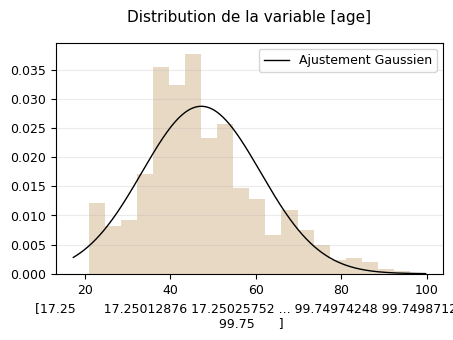
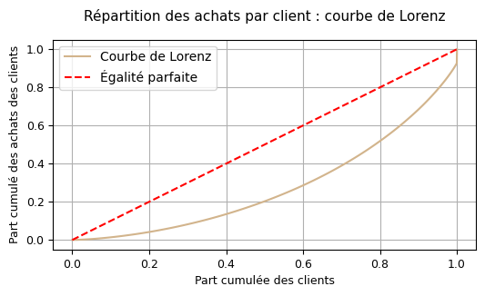
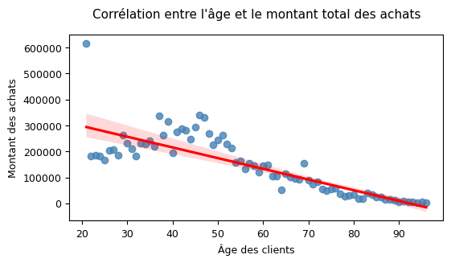

- 8 621clients analysés sur 24 mois
- 7,35 %du CA porté par 4 clients
- 0,44indice de Gini sur les achats
01 Contexte & besoin métier
Une librairie en ligne dispose de deux ans d'historique de ventes et veut orienter ses choix stratégiques : quels stocks constituer, quelles offres personnaliser, comment faire progresser le panier moyen.
Pour y répondre, il faut d'abord savoir si les clients ont des profils différents. Si le genre ou l'âge influencent vraiment les achats, personnaliser les offres a du sens ; sinon, c'est un investissement inutile.
Le commanditaire attendait des réponses claires, par exemple « les femmes achètent plus de telle catégorie ». Il fallait donc donner ces réponses en précisant leur fiabilité : un lien peut être statistiquement sûr mais trop faible pour peser sur les ventes.
02 Données
Trois fichiers : clients, produits et transactions, couvrant la période du 1er mars 2021 au 28 février 2023. Après consolidation : 8 621 clients, répartis à 52,1 % de femmes et 47,9 % d'hommes.
Traitement de conformité
Le fichier clients contenait l'année de naissance. Elle a été convertie en âge, puis la date de naissance a été supprimée du jeu de travail. L'analyse porte sur des tranches d'âge, non sur des individus identifiables.
Qualité et limites
- 21 clients sans aucun achat ont été écartés : ils ne portent pas de comportement d'achat et auraient tiré toutes les moyennes vers le bas.
- Quatre clients atypiques présentent des volumes sans commune mesure avec les autres. Le cinquième client le plus dépensier atteint 5 286 €, contre 326 040 € pour le premier, soit un rapport de 1 à 62. Ce ne sont pas des erreurs de saisie mais des acheteurs professionnels.
- Prix très asymétriques : le coefficient d'aplatissement du prix atteint 44,3, contre 0,3 pour l'âge. Quelques ouvrages très chers déforment toute la distribution.
- Aucune donnée sur les visiteurs n'ayant pas acheté : impossible de calculer un taux de conversion.
03 Démarche
-
Isoler les clients professionnels avant toute statistique
Les quatre acheteurs atypiques ont été identifiés puis traités séparément. Les analyses comportementales portent sur la clientèle particulière seule ; les indicateurs de chiffre d'affaires, eux, conservent tout le monde.
Pourquoi ce choix
Ces quatre clients représentent 7,35 % du chiffre d'affaires. Les garder dans l'analyse du comportement aurait faussé les moyennes, les corrélations et les tests, car leur poids écrase celui des autres clients.
Les supprimer n'était pas une solution non plus, car ils pèsent lourd dans le chiffre d'affaires. Ils ont donc été analysés à part.
-
Tester la normalité avant de choisir les tests
Avant toute mesure d'association, la distribution de l'âge et celle du prix ont été confrontées à une loi normale : visuellement d'abord, puis par un test statistique, complété par les mesures d'asymétrie et d'aplatissement.

Pourquoi cette étape est décisive
Le test rejette la loi normale pour les deux variables. Le prix, en particulier, compte quelques valeurs très élevées qui déforment la distribution : un coefficient de Pearson, qui suppose une loi normale, aurait donné un résultat trompeur.
Toutes les corrélations ont donc été calculées avec la méthode de Spearman, qui compare les rangs plutôt que les valeurs et reste fiable quelle que soit la forme de la distribution.
-
Mesurer la concentration du chiffre d'affaires
Une courbe de Lorenz a été construite, accompagnée de l'indice de Gini, une première fois sur l'ensemble des clients, une seconde fois sur les seuls particuliers.
Pourquoi deux calculs
L'indice passe de 0,44 toutes clientèles confondues à 0,40 hors clients professionnels. La différence correspond au poids de ces quatre clients. Avec un seul calcul, on aurait cru la clientèle des particuliers plus concentrée qu'elle ne l'est.
-
Tester les associations, une hypothèse à la fois
Chaque question métier a été formulée en hypothèse nulle avant d'être testée : test du Chi² pour croiser genre et catégorie de livre, corrélations de Spearman pour l'âge face au montant, à la fréquence et au panier moyen, analyse de variance pour l'âge face à la catégorie.
-
Recalculer par tranche d'âge
Le nuage de points âge / montant laissait deviner plusieurs régimes de comportement. Trois tranches ont été délimitées (21-33, 34-53 et 54-96 ans) et chaque corrélation recalculée à l'intérieur de chacune.
Pourquoi ce choix
Cette étape change la conclusion. Le coefficient global de −0,87 laisse penser que les dépenses baissent régulièrement avec l'âge. Le calcul par tranche montre qu'il n'y a aucun lien significatif avant 54 ans, et un lien très fort après.
Sans ce découpage, on aurait recommandé de cibler par âge toute la clientèle, alors que seul le segment des plus de 54 ans le justifie.

04 Résultats & impact
| Question métier | Méthode | Résultat | Conclusion |
|---|---|---|---|
| Le genre influence-t-il la catégorie achetée ? | Chi² | p < 0,001 | Oui, mais effet faible |
| L'âge influence-t-il le montant dépensé ? | Spearman | ρ = −0,87 | Oui, fortement |
| L'âge influence-t-il la fréquence d'achat ? | Spearman | ρ = −0,66 | Oui, modérément |
| L'âge influence-t-il le panier moyen ? | Spearman | p = 0,50 | Non significatif |
| L'âge influence-t-il la catégorie achetée ? | ANOVA | η² = 0,11 | Oui, mais explique 11 % |

Principaux enseignements
- Après 54 ans, les clients achètent moins souvent, mais pas moins cher. Dans cette tranche, le montant total et la fréquence d'achat baissent ensemble, alors que le panier moyen reste stable.
- Le genre a un effet réel mais faible. Le lien est statistiquement sûr, mais les écarts restent petits : c'est le grand volume de données qui permet de le détecter.
- L'âge n'explique que 11 % du choix de catégorie. Le résultat est significatif, mais 89 % des différences viennent d'autres facteurs.
Recommandations
- Cibler la fréquence sur les 54 ans et plus (relances, abonnements, rendez-vous éditoriaux) plutôt que d'essayer d'augmenter leur panier, qui reste stable.
- Sécuriser les quatre comptes professionnels. 7,35 % du chiffre d'affaires sur quatre clients constitue un risque de dépendance ; ils méritent un suivi commercial dédié.
- Ne pas bâtir la personnalisation sur le genre seul. L'effet existe mais il est trop faible pour porter à lui seul une stratégie d'offre.
- Aligner le stock sur les volumes par catégorie, dont la structure est stable sur les 24 mois observés.
05 Limites & prochaines pistes
Un lien n'est pas une cause. Les données montrent que les plus de 54 ans achètent moins souvent, sans en donner la raison. Rien dans ces données ne dit s'il s'agit d'une préférence pour le livre papier en magasin, d'une difficulté d'usage du site ou d'un autre facteur.
Le segment senior reste sous-analysé. La tranche 54-96 ans est la seule où un effet net apparaît, et c'est aussi la plus large : elle mélange probablement des comportements très différents entre 55 et 90 ans.
Quatre clients ne suffisent pas à définir un segment. Les clients professionnels sont trop peu nombreux pour qu'on en tire un profil type.
Un test peu adapté à la distribution de l'âge. L'analyse de variance suppose des données normales, hypothèse rejetée plus haut pour l'âge. Le grand nombre d'observations la rend assez robuste, mais un test de Kruskal-Wallis, qui ne fait pas cette hypothèse, aurait été plus cohérent avec le reste de l'étude.
Prochaines pistes
- Approfondir le segment des plus de 54 ans par un découpage plus fin, et le confronter à des données qualitatives.
- Suivre le parcours d'achat sur le site pour mesurer les abandons, impossibles à voir aujourd'hui faute de données de navigation.
- Suivre l'indice de Gini dans le temps : sa progression signalerait une dépendance croissante à quelques comptes.
- Tester les recommandations par expérimentation contrôlée plutôt que de les déployer d'emblée.